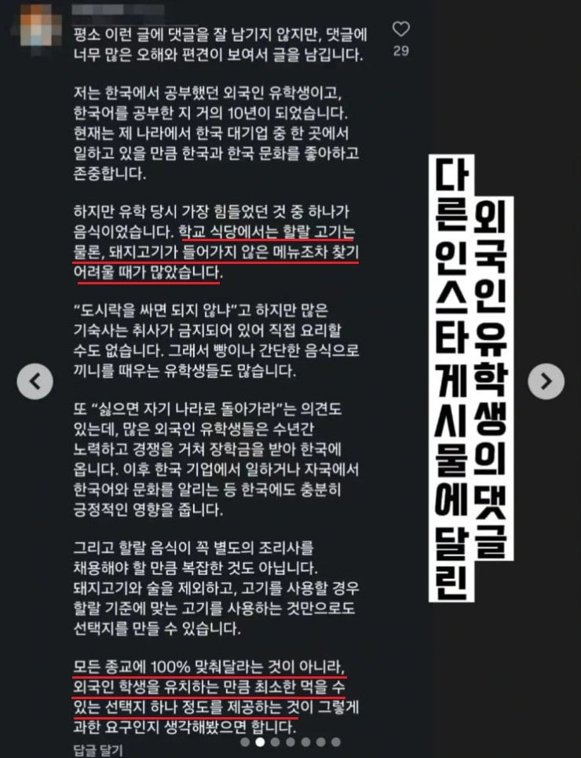

외국인 유저의 댓글이 어느정도 일리가 있다
vs
아무리그래도 이건 에바지
유저들사이에서 의견이 서로 엇갈린다고 함..

외국인 유저의 댓글이 어느정도 일리가 있다
vs
아무리그래도 이건 에바지
유저들사이에서 의견이 서로 엇갈린다고 함..

편식하지마 주는대로 먹어 샤갈

알아서 쳐 골라먹어 씨빨새끼들아
애초에 본인들에게 이런저런 제약이 존나 많은데 오기전에 어떻게 할지 한번이라도 생각해봐야하는거 아님? 일단 온 다음에 할랄없어 해결'해줘' 하면 누가 좋게봄
도시락 싸갖고 가
해주라는새끼들 집주변에 이슬람 사원 건축 기원한다
외국인이 즈그나라에서 포옹한번하면 율법어겻다고 모가지 바로 썰어버리는것들이
왜 지가 외국인일땐 처먹는거 따위로 권리를 주장할수 있는거지
느그나라에서 예수부처 믿게해주면 인정ㅋㅋ
믿게 해주잖어..
순교시켜주나?
뭔 소리 정신나간 몇 곳 빼고 다 믿게 해줌
쟤네는 다른종교 믿는것보다 무교를 더 이상한사람으로 생각한데. 어떻게 종교가 없고 신을 안믿을 수 있지? 너 공산주의자야? 라고 생각한데
이슬람은 밥 못차려주니깐 안받아요라고 하면 차별이라고 징징댈꺼고, 받으면 저지랄하고.
죽음의 2지선다.
도시락을 쳐 싸세요
씨발새끼들이 지들나라에서 돼지고기 구하는게 어렵습니다 배려좀해주세요라고하면 참수할새끼들이 진짜 죽여버리고싶네
급식을 할지 그걸 안하는 대신 식비 지원 받을지 선택할 수 있도록 하면 되는데
예시가 종교지만 알레르기 환자에게도 해당되는 부분이라 논의가 필요한 부분은 맞음
먹지마
반찬투정 씹
할랄이 좋으면 그 나라 가면 되
국제적인 행사 월드컵에도 맥주 안판다고 한 새끼들이 뭐?? 할랄???
하 씨발 도시락 싸댕기라고 병1신련들아
제발 꺼지던가 도시락 싸던가.
도시락도 못 싸? 맞춤 도시락 주문을 해.
아가리 하시고 융화되던가 꺼지십시오 왜 감놔라 배놔라 하세요
"NAGA"
니들이 적응해 ㅅㅂ
다 맞춰달라는 말 아닌 건 알지
그냥 다 안 맞춰줄 테니 너네가 알아서 먹으란 거야